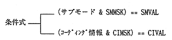
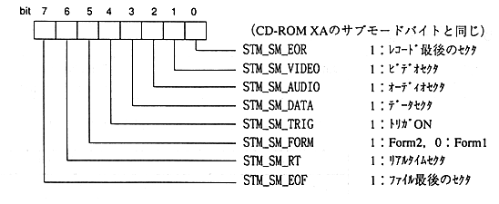

Title | Data | Data Name | No |
access macro | type | Description |
|---|---|---|
STM_KEY_FN (stmkey) | Sint16 | File number |
STM_KEY_CN (stmkey) | Sint16 | Channel number |
STM_KEY_SMMSK (stmkey) | Sint16 | Submode mask pattern |
STM_KEY_SMVAL (stmkey) | Sint16 | Submode comparison value |
STM_KEY_CIMSK (stmkey) | Sint16 | Coding information mask pattern |
STM_KEY_CIVAL (stmkey) | Sint16 | Coding information comparison value |
The
submode and coding information are logically ANDed with the mask pattern. After that, it is judged whether it is equal to the comparison value.

constant name | description |
|---|---|
STM_KEY_NONE | Ignores the selection of each stream key. Specify the file number, |
